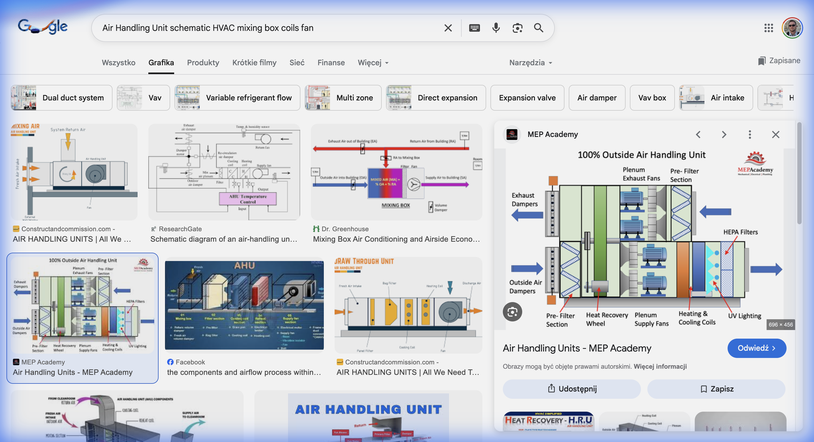

Ćwiczenia 7: Klimatyzacja Precyzyjna Hali
🏭 Projekt: Etap Finalny - HVAC (ang. heating, ventilation, air conditioning)
W hali montażu elektroniki musimy utrzymać ściśle określone warunki, aby uniknąć wyładowań elektrostatycznych (ESD) i korozji.
Wymagania Hali (Punkt W):
- Temperatura: \(t_w = 22^\circ C \pm 1K\).
- Wilgotność: \(\varphi_w = 50\% \pm 5\%\).
- Zyski Ciepła Jawnego: \(Q_j = 50 \text{ kW}\).
- Zyski Wilgoci: \(W = 10 \text{ kg/h}\).
Zadanie:
Zaprojektować proces przygotowania powietrza w centrali wentylacyjnej (Zima/Lato).

❄️ Zadanie 7.1: Proces Zimowy (Ogrzewanie + Nawilżanie)
Zimą powietrze zewnętrzne ma parametry: \(t_z = -10^\circ C\), \(\varphi_z = 90\%\). Musimy je doprowadzić do stanu nawiewu \(N\), aby pokryć straty ciepła.
Krok 1: Wykres h-X
- Zaznacz punkt Z (\(t_z=-10, \varphi_z=90\%\)). \(X_z \approx 1.5 \text{ g/kg}\).
- Punkt W (\(t_w=22, \varphi_w=50\%\)). \(X_w \approx 8.4 \text{ g/kg}\).
Krok 2: Proces w Centrali
Aby osiągnąć \(X_w\) z \(X_z\), musimy dodać wilgoć (nawilżanie parowe - izoterma). Aby osiągnąć \(t_w\), musimy ogrzać powietrze.
Sekwencja: 1. Nagrzewnica Wstępna: Ogrzewanie \(Z \rightarrow P\) (\(X=const\)). 2. Nawilżacz Parowy: Nawilżanie \(P \rightarrow N\) (\(t \approx const\)). 3. Stan nawiewu \(N\) musi mieć \(X_N = X_W\) (przyjmijmy bilans wilgoci \(\approx 0\)).
Obliczenia: Szukamy \(X_P = X_Z = 1.5\). Szukamy \(X_N = 8.4\). \(t_N \approx 22^\circ C\) (uproszczenie, \(t_N > t_W\) dla ogrzewania).
📈 Wizualizacja na Wykresie h-X
Jak narysować proces zimowy?
Zaznacz punkt Z (\(-10^\circ C, 90\%\)). Odczytaj \(X_Z\).

Punkt Z
Zaznacz punkt W (\(22^\circ C, 50\%\)). Odczytaj \(X_W\).
Punkt Z
Punkt W
Pionowo w górę od Z (\(X = const\)) do temperatury \(t_P\).
Punkt Z
Punkt W
Po izotermie (\(t \approx const\)) w prawo, aż osiągniesz \(X_W\).
Punkt Z
Punkt W
☀️ Zadanie 7.2: Proces Letni (Chłodzenie + Osuszanie)
Latem jest gorąco i wilgotno: \(t_z = 32^\circ C, \varphi_z = 45\%\). \(X_z \approx 13.5 \text{ g/kg}\). Punkt W: \(X_w = 8.4 \text{ g/kg}\).
Analiza:
\(X_z > X_w\) (13.5 > 8.4) \(\Rightarrow\) Musimy OSUSZAĆ!
Proces w Chłodnicy:
Chłodzenie przebiega do punktu rosy, a potem po linii nasycenia (\(\varphi=100\%\)). Wykraplanie wody zachodzi na powierzchni chłodnicy.
- Oziębiamy powietrze aż do \(X = 8.4 \text{ g/kg}\) (na linii nasycenia).
- To wymaga temperatury punktu rosy: \(t_R (8.4 g/kg) \approx 11.5^\circ C\).
- Ale \(11.5^\circ C\) to za zimno dla ludzi! (Przeciąg).
- Musimy podgrzać powietrze (Nagrzewnica Wtórna) do np. \(18^\circ C\).
Wniosek: Latem musimy najpierw mocno chłodzić (by osuszyć), a potem lekko podgrzać! To duży koszt energetyczny.
🏗️ Zadanie 7.3: Bilans Centrali
Oblicz moc chłodniczą i grzewczą dla strumienia \(\dot{V} = 10\,000 \text{ m}^3/h\). \(\rho \approx 1.2 \text{ kg/m}^3\).
\[ \dot{m} = \frac{10000}{3600} \cdot 1.2 \approx \mathbf{3.33 \text{ kg/s}} \]
Chłodnica (Lato):
\(h_z (32^\circ C, 45\%) \approx 67 \text{ kJ/kg}\). \(h_{ch} (11.5^\circ C, 100\%) \approx 33 \text{ kJ/kg}\). \[ \dot{Q}_{ch} = \dot{m} (h_z - h_{ch}) = 3.33 \cdot (67 - 33) = 3.33 \cdot 34 \approx \mathbf{113 \text{ kW}} \]
Nagrzewnica Wtórna (Lato):
\(h_{ch} (11.5^\circ C) \approx 33\). \(h_{nawiew} (18^\circ C, X=8.4) \approx 40\). \[ \dot{Q}_{grz} = \dot{m} (40 - 33) = 3.33 \cdot 7 \approx \mathbf{23 \text{ kW}} \]
Important
Marnujemy 23 kW ciepła, żeby podgrzać powietrze, które wcześniej schłodziliśmy! Rozwiązanie: Rekuperacja chłodu lub by-pass powietrza.
🔍 Zadanie 7.4: Punkt Rosy – Kontrola Kondensacji
W magazynie elektroniki temperatura ściany zewnętrznej spada do \(12^\circ C\) zimą. Czy przy parametrach wewnętrznych (\(22^\circ C, 50\%\)) dojdzie do kondensacji na ścianie?
Wyznacz punkt rosy z wykresu h-X:
- Punkt W: \(t_w = 22^\circ C, \varphi = 50\% \rightarrow X_w \approx 8.4 \text{ g/kg}\).
- Punkt rosy: idź w lewo po \(X = const\) (8.4 g/kg) aż do przecięcia z krzywą \(\varphi = 100\%\).
\[ t_{rosy} (X = 8.4) \approx \mathbf{11.5^\circ C} \]
Ściana ma \(12^\circ C > 11.5^\circ C\) → Na granicy! Przy lekkim spadku temperatury pojawi się rosa.
Decyzja: Należy ocieplić ścianę (zwiększyć współczynnik U) lub obniżyć wilgotność w hali do \(\varphi < 45\%\).
📐 Zadanie 7.5: Wymagany Strumień Powietrza
Oblicz minimalny strumień powietrza nawiewanego, aby pokryć zyski ciepła jawnego (\(Q_j = 50\) kW) i wilgoci (\(W = 10\) kg/h).
Bilans ciepła jawnego: \[ Q_j = \dot{m} \cdot c_p \cdot (t_W - t_N) \]
Przyjmijmy \(t_N = 16^\circ C\) (Nawiew chłodniejszy niż hala), \(t_W = 22^\circ C\).
\[ \dot{m} = \frac{50\,000}{1005 \cdot (22 - 16)} = \frac{50\,000}{6030} \approx \mathbf{8.3 \text{ kg/s}} \] \[ \dot{V} = \frac{8.3}{1.2} \approx \mathbf{6.9 \text{ m}^3/\text{s} = 24\,900 \text{ m}^3/h} \]
Weryfikacja bilansu wilgoci: \[ \Delta X = \frac{W}{\dot{m}} = \frac{10/3600}{8.3} = 0.000335 \text{ kg/kg} = 0.34 \text{ g/kg} \] \(X_N = X_W - \Delta X = 8.4 - 0.34 = 8.06\) g/kg → Praktycznie brak zmiany. Zyski wilgoci są niewielkie.
🔄 Zadanie 7.6: Recyrkulacja Powietrza
Zamiast pobierać 100% powietrza zewnętrznego, stosujemy recyrkulację: 70% powietrza wraca z hali, 30% to świeże powietrze.
Lato: Punkt Z (zewn.): \(32^\circ C, 45\%\). Punkt W (hala): \(22^\circ C, 50\%\).
Punkt Mieszaniny M:
\[ t_M = 0.3 \cdot t_Z + 0.7 \cdot t_W = 0.3 \cdot 32 + 0.7 \cdot 22 = \mathbf{25.0^\circ C} \] \[ X_M = 0.3 \cdot X_Z + 0.7 \cdot X_W = 0.3 \cdot 13.5 + 0.7 \cdot 8.4 = 4.05 + 5.88 = \mathbf{9.93 \text{ g/kg}} \]
🔄 Zadanie 7.6 (cd.): Analiza Oszczędności
Porównanie obciążenia osuszania:
- Bez recyrkulacji (\(X_Z = 13.5\)): Musimy usunąć \(13.5 - 8.4 = 5.1\) g/kg.
- Z recyrkulacją (\(X_M = 9.93\)): Musimy usunąć \(9.93 - 8.4 = 1.53\) g/kg.
Redukcja obciążenia osuszania o 70%! → Mniejsza chłodnica, mniejszy koszt energii.
Tip
Recyrkulacja to najskuteczniejszy sposób zmniejszenia kosztów energetycznych centrali. Ograniczenie: wymogi higieniczne (min. 30 m³/h powietrza świeżego na osobę).
💧 Zadanie 7.7: Ilość Skroplonej Wody
W procesie letnim (chłodzenie+osuszanie) z powietrza wykrapla się woda. Ile litrów na godzinę?
Strumień masy powietrza: \(\dot{m} = 3.33\) kg/s (z zad. 7.3).
Zmiana zawilżenia: \[ \Delta X = X_Z - X_{ch} = 13.5 - 8.4 = 5.1 \text{ g/kg} = 0.0051 \text{ kg/kg} \]
Strumień kondensatu: \[ \dot{m}_w = \dot{m} \cdot \Delta X = 3.33 \cdot 0.0051 = 0.017 \text{ kg/s} \] \[ \dot{V}_w = 0.017 \cdot 3600 = \mathbf{61.2 \text{ l/h}} \]
Note
To ponad litr na minutę wykroplonej wody! Musi być odprowadzona do kanalizacji przez syfon (aby nie wciągać powietrza). Tę wodę można też wykorzystać jako destylowaną do procesów technologicznych.
🏗️ Zadanie 7.8: Nagrzewnica Zimowa – Moc
Oblicz moc nagrzewnicy zimowej dla strumienia \(\dot{V} = 25\,000 \text{ m}^3/h\) powietrza podgrzewanego od \(-10^\circ C\) do \(22^\circ C\).
\[ \dot{m} = \frac{25000}{3600} \cdot 1.2 \approx 8.33 \text{ kg/s} \]
Z wykresu h-X:
- \(h_Z (-10^\circ C, 90\%) \approx -8 \text{ kJ/kg}\)
- \(h_N (22^\circ C, X=1.5 g/kg) \approx 26 \text{ kJ/kg}\)
\[ \dot{Q}_{nagr} = \dot{m} (h_N - h_Z) \] \[ \dot{Q}_{nagr} = 8.33 \cdot (26 - (-8)) \] \[ \dot{Q}_{nagr} = 8.33 \cdot 34 \approx \mathbf{283 \text{ kW}} \]
Warning
\(283 \text{ kW}\) to jak ogrzewanie ~15 domów jednorodzinnych! Dlatego rekuperacja (odzysk ciepła) jest kluczowa — może zaoszczędzić 75% tej mocy.
🏠 Zadanie Domowe (Raport 7)
Temat: Odzysk Ciepła w Centrali.
Zaprojektuj wymiennik Krzyżowy (Rekuperator) dla sezonu zimowego.
- Powietrze wyrzucane z hali: \(22^\circ C\).
- Powietrze czerpane: \(-10^\circ C\).
- Sprawność odzysku rekuperatora: \(\eta = 75\%\).
Oblicz: 1. Temperaturę powietrza za rekuperatorem (przed nagrzewnicą właściwą). 2. Ile mocy grzewczej [kW] zaoszczędzimy dzięki temu urządzeniu? 3. Porównaj koszt rekuperatora (20 000 zł) z oszczędnością gazu (zakładając zimę 3000h).

Termodynamika Techniczna - Ćwiczenia Projektowe